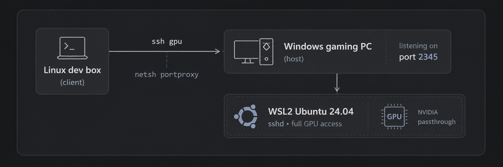

To be precise, this does not make the RTX appear as a local GPU on my workstation…the programs run on the gaming PC, and I control them remotely over SSH.
The setup

WSL2 gives the GPU to Linux via NVIDIA’s driver passthrough. nvidia-smi works inside Ubuntu with zero driver installs on the Linux side. The trick is making it reachable and keeping it alive:
- sshd inside WSL on port 2345, key auth only.
netsh interface portproxyon Windows relays2345from the LAN into the WSL VM’s NAT IP, plus a firewall rule.- An
ssh gpualias in~/.ssh/configon the dev box. That’s the whole interface.
One idempotent PowerShell script does all of it, and re-running it after a reboot repoints the portproxy at WSL’s new NAT IP.
The gotchas that actually cost me time
- WSL idle shutdown is the killer. The VM stops ~60 seconds after the last
wsl.exeexits, taking sshd with it, causing endless mysterious “connection reset”.vmIdleTimeout=-1in.wslconfigdid not work for me. The fix: a scheduled task that runswsl -- sleep infinityat logon. Crude, bulletproof. - Ubuntu 24.04 ignores
Port 2345in sshd_config because of systemd socket activation.systemctl disable --now ssh.socket && systemctl enable --now ssh.service. - Don’t try
networkingMode=mirroredif you run Docker/Podman on the Windows side. It nuked WSL networking entirely for me. Plain NAT + portproxy is boring and works. nvidia-smi“not found” over non-interactive SSH. WSL’s/usr/lib/wsl/libisn’t in PATH for non-login shells. Use the full path.- Virtualization off in BIOS (
HCS_E_HYPERV_NOT_INSTALLED). On AMD boards that’s SVM Mode, buried under Tweaker → Advanced CPU Settings.
What it’s for
Blackwell cards need CUDA 12.8+, so PyTorch has to be the cu128 build. With that pinned, the workflow from the Linux box is just:
scp -r screenshots gpu:~/
ssh gpu
cd ~/ksp_clip && source .venv/bin/activate
python index.py ~/screenshots
python search.py "rocket on launchpad at night"
That’s CLIP-based free-text search over my own images, running on the 5070, driven entirely from the machine I actually work on. When I’m done, the gaming box is still just a gaming box. Nothing about this setup gets in the way of that.
Best of both worlds: Windows keeps the games, Linux gets the CUDA.